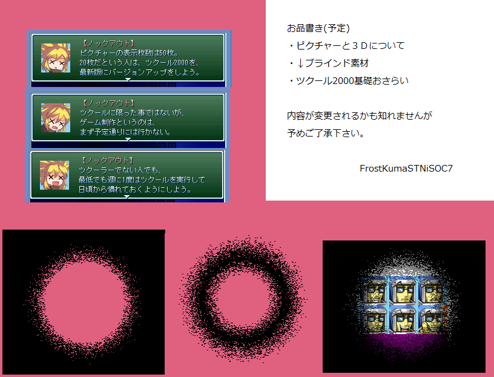

保存資料：2019-01-29の公開ページを再生しています。原HTMLと画像の載荷は保存済みです。
| No.49 iSOC-7の3D講座 | |
 |
|
| 作者：iSOC-7(アイゾックセブン) | |
| ツクール：2000 | |
| ジャンル：講座 見るゲ | |
| 配信/投稿：可能/可能 | |
| 作者コメント： VIPRPGに初参加させて頂きます。 対象はツクーラー向けに3Dの解説を予定しております。 配信は可能と言いましたが、後々内容が大幅に変わるかも知れない事を予めご了承下さい。 |
|
| 管理人コメント： たとえ弄る気がなくともツクールを起動する。本当に大事。 |
|
| ダウンロード(2.5MB) / 感想掲示板 | |
| 前の作品 / 次の作品 / TOPへ戻る | |